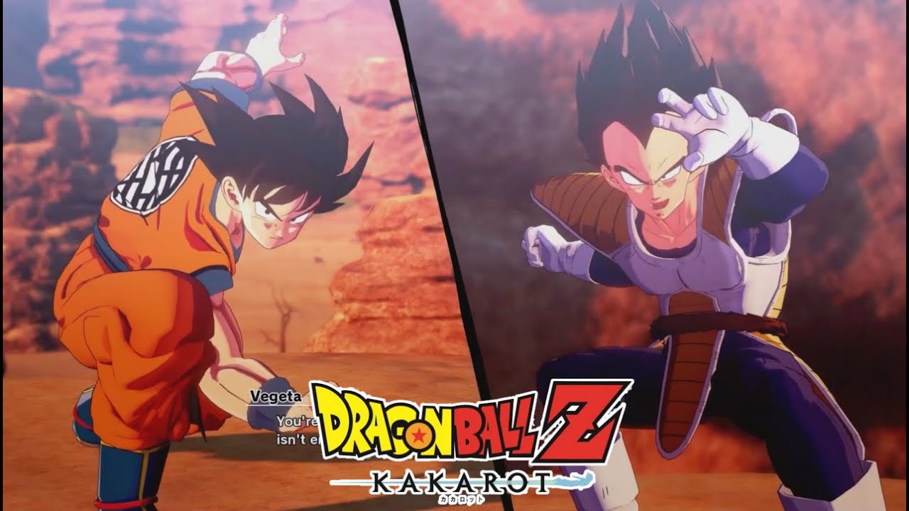
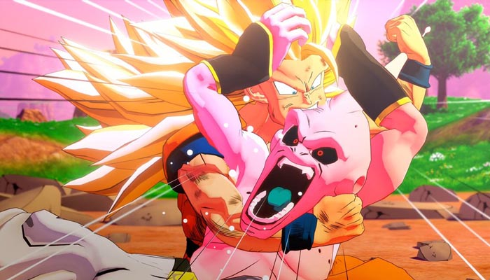

Dragon Ball Kakarot é um jogo que corresponde a série animada Dragon Ball Z, no estilo bem parecido com Naruto Shipudem Storm, o game tem como caractéristicas vários mapas que cabe a você decidir entre realizar as missões secundarias ou seguir a historia do jogo. Tendo como conteúdo base as sagas: Sayajin.

Neste site irei colocar em prática meu conhecimento em HTML e CSS!
Abaixo, estarei colocando várias imagens do jogo: Dragon Ball Kakarot com o propósito apenas de realizas testes e colocar meu conhecimento em prática. Os direitos autorais são da empresa criadora do jogo.
Dragon Ball Kakarot
A saga de Cell.

e Por fim, a saga de Majin Boo.
Estas são as sagas que você irá possuir ao comprar o jogo, caso goste de jogo e queria adiquirir outras sagas que se passam em Dragon Ball Super é possível e está disponível pela Steam.